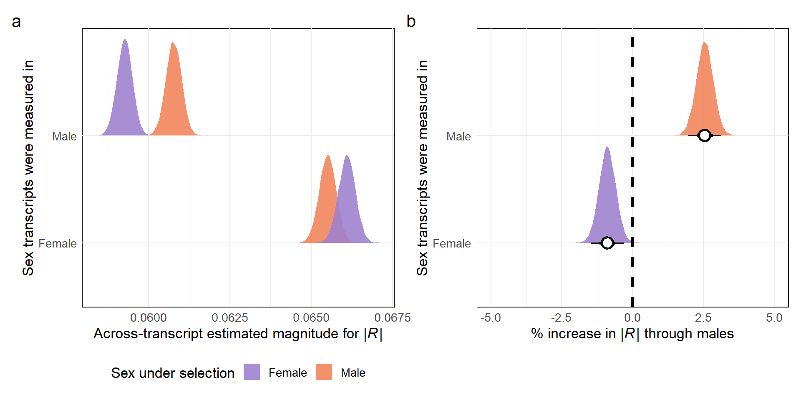
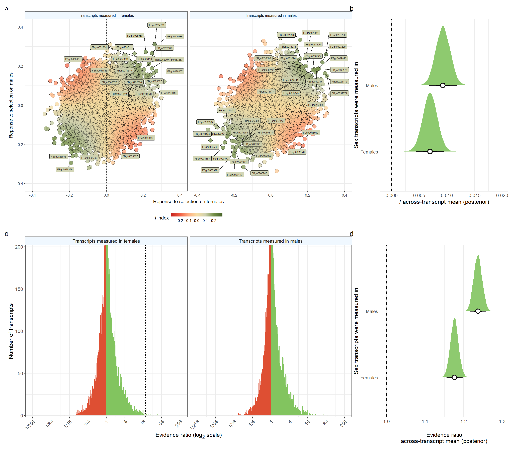

Last updated: 2023-10-17
Checks: 7 0
Knit directory: DGRP_sexual_conflict/
This reproducible R Markdown analysis was created with workflowr (version 1.7.1). The Checks tab describes the reproducibility checks that were applied when the results were created. The Past versions tab lists the development history.
Great! Since the R Markdown file has been committed to the Git repository, you know the exact version of the code that produced these results.
Great job! The global environment was empty. Objects defined in the global environment can affect the analysis in your R Markdown file in unknown ways. For reproduciblity it’s best to always run the code in an empty environment.
The command set.seed(20210706) was run prior to running
the code in the R Markdown file. Setting a seed ensures that any results
that rely on randomness, e.g. subsampling or permutations, are
reproducible.
Great job! Recording the operating system, R version, and package versions is critical for reproducibility.
Nice! There were no cached chunks for this analysis, so you can be confident that you successfully produced the results during this run.
Great job! Using relative paths to the files within your workflowr project makes it easier to run your code on other machines.
Great! You are using Git for version control. Tracking code development and connecting the code version to the results is critical for reproducibility.
The results in this page were generated with repository version 48c7e9f. See the Past versions tab to see a history of the changes made to the R Markdown and HTML files.
Note that you need to be careful to ensure that all relevant files for
the analysis have been committed to Git prior to generating the results
(you can use wflow_publish or
wflow_git_commit). workflowr only checks the R Markdown
file, but you know if there are other scripts or data files that it
depends on. Below is the status of the Git repository when the results
were generated:
Ignored files:
Ignored: .Rapp.history
Ignored: .Rhistory
Ignored: .Rproj.user/
Untracked files:
Untracked: %
Untracked: -Toms-laptop-2.Rhistory
Untracked: -Toms-laptop-3.Rhistory
Untracked: -Toms-laptop.Rhistory
Untracked: Chapter_2_Figure_S1.pdf
Untracked: Chapter_2_Figure_S2.pdf
Untracked: Conflict_plot_females.pdf
Untracked: Conflict_plot_male.pdf
Untracked: Figure_1.pdf
Untracked: Figure_1.png
Untracked: Figure_2.pdf
Untracked: Figure_3.pdf
Untracked: Figures.Rmd
Untracked: Manuscript/
Untracked: PRISMA.pptx
Untracked: Picture1.pdf
Untracked: R_transcriptome_medians.csv
Untracked: Reported_heritability.xlsx
Untracked: Useful_cuts.Rmd
Untracked: add_later.Rmd
Untracked: code/get_gene_annotations.R
Untracked: concordance_plot_sem.pdf
Untracked: conflict_plot.pdf
Untracked: data/RFF.csv
Untracked: data/RFM.csv
Untracked: data/RMF.csv
Untracked: data/RMM.csv
Untracked: data/R_summarised_transcriptome.csv
Untracked: data/all.dgrp.phenos_scaled.csv
Untracked: data/gene_anntotations.csv
Untracked: data/huang_transcriptome/
Untracked: data/meta_data_for_all_traits.csv
Untracked: data/trait_names.rds
Untracked: data/transcriptome_chunks/
Untracked: data/transcriptome_output/
Untracked: evidence_ratios.R
Untracked: fits/
Untracked: height_example.pdf
Untracked: mag_R_sem.pdf
Untracked: sem_figures.R
Unstaged changes:
Modified: DGRP_sexual_conflict.Rproj
Modified: _workflowr.yml
Deleted: code/export_gwas_results_for_shiny_app.R
Modified: data/all.dgrp.phenos_unscaled.csv
Note that any generated files, e.g. HTML, png, CSS, etc., are not included in this status report because it is ok for generated content to have uncommitted changes.
These are the previous versions of the repository in which changes were
made to the R Markdown
(analysis/Transcriptome_analysis.Rmd) and HTML
(docs/Transcriptome_analysis.html) files. If you’ve
configured a remote Git repository (see ?wflow_git_remote),
click on the hyperlinks in the table below to view the files as they
were in that past version.
| File | Version | Author | Date | Message |
|---|---|---|---|---|
| Rmd | 48c7e9f | tomkeaney | 2023-10-17 | Restarting the project |
\(~\)
First load the packages
library(tidyverse) # for tidy coding
library(MetBrewer) # for many nice colour palettes
library(rcartocolor) # more cool colours
library(kableExtra) # for scrolling tables
library(DT) # for interactive tables
library(patchwork) # to join mulitple plots nicely
library(brms) # for bayesian models
library(tidybayes) # for more bayesian things
library(bayestestR) # for the pd metric
library(broom) # convert results of functions into tables
library(ggtext) # for markdown features in ggplot
library(ggrepel) # for plot labels in ggplot
library(ggnewscale) # to reset scales in ggplot \(~\)
We use the data archived on the dgrp2 website, which was provided by Huang et al. (2015). These data are levels of expression of genes measured across 185 DGRP lines. Huang et al’s data contains Y-linked genes that have higher/equal expression in females in all lines, presumably microarray issues/errors. To be conservative, we restrict our analyses to genes that are known to be on chromosomes that are present in both sexes. After data cleaning, we retain 14,268 genes in our analysis.
We also load gene annotation data using the org.Dm.eg.db
R package provided by BiocManager. The code used to produce
annotations is provided in the code subdirectory, in the
get_gene_annotations.R file.
Huang et al. 2015 replicated each gene expression measurement twice. To find line means, we simply take the average value for each line. We then standardise the expression of each gene to have \(\mu = 0\) and \(\sigma = 1\) (as with the ‘phenotypic’ traits.
# load in the data, note that traits have already been standardised
DGRP_data <-
left_join(
read_csv("data/all.dgrp.phenos_scaled.csv") %>%
mutate(line = as.factor(line)),
read_csv("data/meta_data_for_all_traits.csv") %>%
group_by(Reference) %>%
mutate(study_ID = as.factor(cur_group_id()),
Pooled = if_else(Sex == "Pooled", "Yes", "No"))) %>%
left_join(read_rds("data/trait_names.rds")) %>%
filter(str_detect(Trait, "fitness.early.life")) %>%
select(line, Trait, trait_value) %>%
pivot_wider(names_from = Trait, values_from = trait_value) %>%
rename(female_fitness = fitness.early.life.f, male_fitness = fitness.early.life.m)
gene_annotations <- read_csv("data/gene_anntotations.csv")
# Helper to load all the Huang et al. expression data into tidy format
load_expression_data <- function(gene_annotations){
# Note: Huang et al's data contains Y-linked genes that have
# higher/equal expression in *females* in all lines, presumably microarray issues/errors.
# To be conservative, we restrict our analyses to genes that are known to be on a
# chromosomes that is present in both sexes
genes_allowed <- gene_annotations %>%
filter(chromosome %in% c("2L", "2R", "3L", "3R", "4", "X")) %>%
pull(FBID)
females <- read_delim("data/huang_transcriptome/dgrp.array.exp.female.txt", delim = " ") %>%
filter(gene %in% genes_allowed) %>%
gather(sample, expression, -gene) %>%
mutate(line = map_chr(str_extract_all(sample, "line_[:digit:]*"), ~ .x[1]),
replicate = map_chr(str_split(sample, ":"), ~ .x[2]),
sex = "Female")
males <- read_delim("data/huang_transcriptome/dgrp.array.exp.male.txt", delim = " ") %>%
filter(gene %in% genes_allowed) %>%
gather(sample, expression, -gene) %>%
mutate(line = map_chr(str_extract_all(sample, "line_[:digit:]*"), ~ .x[1]),
replicate = map_chr(str_split(sample, ":"), ~ .x[2]),
sex = "Male")
bind_rows(females, males) %>%
select(sample, line, sex, replicate, gene, expression)
}
expression_line_means <-
load_expression_data(gene_annotations) %>% # use the custom function to load expression data
mutate(line = str_remove(line, "line_"),
line = as.factor(line)) %>%
group_by(line, sex, gene) %>%
mutate(trait_value = mean(expression)) %>% # compute the average between replicates for each gene
ungroup() %>%
distinct(line, sex, gene, trait_value) %>%
group_by(sex, gene) %>% # scale the traits, specific to gene and sex
mutate(trait_value = as.numeric(scale(trait_value))) %>%
ungroup() %>%
rename(Sex = sex) %>%
# join the fitness data
left_join(DGRP_data)
# the transcriptome is large; memory is therefore a consistent problem with this analysis - it helps to clear often
#
invisible(gc())\(~\)
\(~\)
The various R metrics are calculated identically to the classic phenotype analysis.
\(~\)
To estimate the covariance between \(A_w\) and \(A_z\) (which in this case is a transcript),
we fitted bivariate Bayesian linear models using the brms
package (Bürkner, 2017) for R version 4.2.2. For each
combination of trait/transcript and sex, we used line means for the
focal trait/transcript and the fitness of the focal sex as the two
response variables and fitted an intercept-only Gaussian model. Each
model returned a posterior distribution of the residual correlation
between trait/transcript and fitness, which for data expressed in
standard units is equivalent to the covariance.
Build functions to run the models
# RFF estimates
female_transcripts <- expression_line_means %>% filter(Sex == "Female")
transcript_list_female <- unique(female_transcripts$gene) # an input to the map_dfr() function that we'll need in a few chunks time
# code the model structure we will use for all traits/transcripts using one example - `FBgn0000014`. We can then use the update() function to run this model many times, once for each trait/transcript measured in females. update() makes this process many times faster, because the model can immediately start sampling, without the need to recompile.
RFF_transcriptome_model <-
brm(data = female_transcripts %>% filter(gene == "FBgn0000014"),
family = gaussian,
bf(mvbind(female_fitness, trait_value) ~ 1) + set_rescor(TRUE),
prior = c(prior(normal(0, 0.1), class = Intercept, resp = femalefitness),
prior(normal(0, 0.1), class = Intercept, resp = traitvalue),
prior(normal(1, 0.1), class = sigma, resp = femalefitness),
prior(normal(1, 0.1), class = sigma, resp = traitvalue),
prior(lkj(2), class = rescor)),
chains = 4, cores = 4, iter = 4000, warmup = 2000,
seed = 1, file = "fits/RFF_transcriptome_model",
backend = "cmdstanr", refresh = 400)
# make a function to update the model and the posterior sample output with the 'selected trait'
RFF_transcriptome_calculator <- function(selected_gene){
data <- female_transcripts %>% filter(gene == selected_gene)
model <- update(
RFF_transcriptome_model, newdata = data,
chains = 4, cores = 4, iter = 4000, warmup = 2000,
seed = 1, backend = "cmdstanr", refresh = 400)
posterior <-
as_draws_df(model) %>%
rename(Response_to_selection_female = rescor__femalefitness__traitvalue) %>%
mutate(Trait = selected_gene) %>%
select(Trait, Response_to_selection_female) %>%
as_tibble()
posterior
}
# RMF estimates
RMF_transcriptome_model <-
brm(data = female_transcripts %>% filter(gene == "FBgn0000014"),
family = gaussian,
bf(mvbind(male_fitness, trait_value) ~ 1) + set_rescor(TRUE),
prior = c(prior(normal(0, 0.1), class = Intercept, resp = malefitness),
prior(normal(0, 0.1), class = Intercept, resp = traitvalue),
prior(normal(1, 0.1), class = sigma, resp = malefitness),
prior(normal(1, 0.1), class = sigma, resp = traitvalue),
prior(lkj(2), class = rescor)),
chains = 4, cores = 4, iter = 4000, warmup = 2000,
seed = 1, file = "fits/RMF_transcriptome_model",
backend = "cmdstanr", refresh = 400)
# make a function to update the model and the posterior sample output with your desired trait
RMF_transcriptome_calculator <- function(selected_gene){
data <- female_transcripts %>% filter(gene == selected_gene)
model <- update(
RMF_transcriptome_model, newdata = data,
chains = 4, cores = 4, iter = 4000, warmup = 2000,
seed = 1, backend = "cmdstanr", refresh = 400)
posterior <-
as_draws_df(model) %>%
rename(Response_to_selection_male = rescor__malefitness__traitvalue) %>%
mutate(Trait = selected_gene) %>%
select(Trait, Response_to_selection_male) %>%
as_tibble()
posterior
}\(~\)
\(~\)
# RMM estimates
male_transcripts <- expression_line_means %>% filter(Sex == "Male")
transcript_list_male <- unique(male_transcripts$gene)
RMM_transcriptome_model <-
brm(data = male_transcripts %>% filter(gene == "FBgn0000014"),
family = gaussian,
bf(mvbind(male_fitness, trait_value) ~ 1) + set_rescor(TRUE),
prior = c(prior(normal(0, 0.1), class = Intercept, resp = malefitness),
prior(normal(0, 0.1), class = Intercept, resp = traitvalue),
prior(normal(1, 0.1), class = sigma, resp = malefitness),
prior(normal(1, 0.1), class = sigma, resp = traitvalue),
prior(lkj(2), class = rescor)),
chains = 4, cores = 4, iter = 4000, warmup = 2000,
seed = 1, file = "fits/RMM_transcriptome_model",
backend = "cmdstanr", refresh = 400)
# make a function to update the model and the posterior sample output with your desired trait
RMM_transcriptome_calculator <- function(selected_gene){
data <- male_transcripts %>% filter(gene == selected_gene)
model <- update(
RMM_transcriptome_model, newdata = data,
chains = 4, cores = 4, iter = 4000, warmup = 2000,
seed = 1)
posterior <-
as_draws_df(model) %>%
rename(Response_to_selection_male = rescor__malefitness__traitvalue) %>%
mutate(Trait = selected_gene) %>%
select(Trait, Response_to_selection_male) %>%
as_tibble()
posterior
}
# RFM estimates
RFM_transcriptome_model <-
brm(data = male_transcripts %>% filter(gene == "FBgn0000014"),
family = gaussian,
bf(mvbind(female_fitness, trait_value) ~ 1) + set_rescor(TRUE),
prior = c(prior(normal(0, 0.1), class = Intercept, resp = femalefitness),
prior(normal(0, 0.1), class = Intercept, resp = traitvalue),
prior(normal(1, 0.1), class = sigma, resp = femalefitness),
prior(normal(1, 0.1), class = sigma, resp = traitvalue),
prior(lkj(2), class = rescor)),
chains = 4, cores = 4, iter = 4000, warmup = 2000,
seed = 1, file = "fits/RFM_transcriptome_model",
backend = "cmdstanr", refresh = 400)
# make a function to update the model and the posterior sample output with your desired trait
RFM_transcriptome_calculator <- function(selected_trait){
data <- male_transcripts %>% filter(gene == selected_trait)
model <- update(
RFM_transcriptome_model, newdata = data,
chains = 4, cores = 4, iter = 4000, warmup = 2000,
seed = 1)
posterior <-
as_draws_df(model) %>%
rename(Response_to_selection_female = rescor__femalefitness__traitvalue) %>%
mutate(Trait = selected_gene) %>%
select(Trait, Response_to_selection_female) %>%
as_tibble()
posterior
}\(~\)
Run the models using RFF_transcriptome_calculator,
RMF_transcriptome_calculator,
RMM_transcriptome_calculator and
RFM_transcriptome_calculator.
This takes a fair bit of memory, so it might be necessary to run the
models in chunks rather than all in one go. To do this, you can break
the transcript_list_female list into parts and feed it into
the map_dfr function. The completed subset can then be
saved to your hard disk, removed from R and cleared from your computers
memory. This frees up memory to run another chunk without losing
progress. Expand the code chunk below to see an example. All other
chunks have been run and saved for later use.
# run the RFF function
transcript_list_female_1 <- transcript_list_female[1:2000]
if(!file.exists("data/transcriptome_chunks/RFF_transcript_1.csv")){
RFF_transcript_1 <- map_dfr(transcript_list_female_1, RFF_transcriptome_calculator)
write_csv(RFF_transcript_1,
file = "data/transcriptome_chunks/RFF_transcript_1.csv")
rm(RFF_transcript_1)
invisible(gc())
} else RFF_transcript_1 <- read_csv("data/transcriptome_chunks/RFF_transcript_1.csv")Load all the posterior draws, combine and summarise and save the result to the hard disk. This allows us to simply load the summarised results once everything has been run once.
if(!file.exists("data/R_summarised_transcriptome.csv")){
RFF_transcriptome_complete <-
rbind(
read_csv("data/transcriptome_chunks/RFF_transcript_1.csv"),
read_csv("data/transcriptome_chunks/RFF_transcript_2.csv"),
read_csv("data/transcriptome_chunks/RFF_transcript_3.csv"),
read_csv("data/transcriptome_chunks/RFF_transcript_4.csv"),
read_csv("data/transcriptome_chunks/RFF_transcript_5.csv"),
read_csv("data/transcriptome_chunks/RFF_transcript_6.csv"),
read_csv("data/transcriptome_chunks/RFF_transcript_7.csv")
) %>%
group_by(Trait) %>%
summarise_draws("median", "sd", ~quantile(.x, probs = c(0.025, 0.975), na.rm = TRUE)) %>%
ungroup() %>%
select(-variable) %>%
mutate(absolute_R = abs(median),
Fitness_Sex = "Female",
Trait_Sex = "Female")
invisible(gc())
RMF_transcriptome_complete <-
rbind(
read_csv("data/transcriptome_chunks/RMF_transcript_1.csv"),
read_csv("data/transcriptome_chunks/RMF_transcript_2.csv"),
read_csv("data/transcriptome_chunks/RMF_transcript_3.csv"),
read_csv("data/transcriptome_chunks/RMF_transcript_4.csv"),
read_csv("data/transcriptome_chunks/RMF_transcript_5.csv"),
read_csv("data/transcriptome_chunks/RMF_transcript_6.csv"),
read_csv("data/transcriptome_chunks/RMF_transcript_7.csv")
) %>%
group_by(Trait) %>%
summarise_draws("median", "sd", ~quantile(.x, probs = c(0.025, 0.975), na.rm = TRUE)) %>%
ungroup() %>%
select(-variable) %>%
mutate(absolute_R = abs(median),
Fitness_Sex = "Male",
Trait_Sex = "Female")
invisible(gc())
RMM_transcriptome_complete <-
rbind(
read_csv("data/transcriptome_chunks/RMM_transcript_1.csv"),
read_csv("data/transcriptome_chunks/RMM_transcript_2.csv"),
read_csv("data/transcriptome_chunks/RMM_transcript_3.csv"),
read_csv("data/transcriptome_chunks/RMM_transcript_4.csv"),
read_csv("data/transcriptome_chunks/RMM_transcript_5.csv"),
read_csv("data/transcriptome_chunks/RMM_transcript_6.csv"),
read_csv("data/transcriptome_chunks/RMM_transcript_7.csv")
) %>%
group_by(Trait) %>%
summarise_draws("median", "sd", ~quantile(.x, probs = c(0.025, 0.975), na.rm = TRUE)) %>%
ungroup() %>%
select(-variable) %>%
mutate(absolute_R = abs(median),
Fitness_Sex = "Male",
Trait_Sex = "Male")
invisible(gc())
RFM_transcriptome_complete <-
rbind(
read_csv("data/transcriptome_chunks/RFM_transcript_1.csv"),
read_csv("data/transcriptome_chunks/RFM_transcript_2.csv"),
read_csv("data/transcriptome_chunks/RFM_transcript_3.csv"),
read_csv("data/transcriptome_chunks/RFM_transcript_4.csv"),
read_csv("data/transcriptome_chunks/RFM_transcript_5.csv"),
read_csv("data/transcriptome_chunks/RFM_transcript_6.csv"),
read_csv("data/transcriptome_chunks/RFM_transcript_7.csv")
) %>%
group_by(Trait) %>%
summarise_draws("median", "sd", ~quantile(.x, probs = c(0.025, 0.975), na.rm = TRUE)) %>%
ungroup() %>%
select(-variable) %>%
mutate(absolute_R = abs(median),
Fitness_Sex = "Female",
Trait_Sex = "Male")
invisible(gc())
R_summarised_transcriptome <-
bind_rows(RFF_transcriptome_complete, RMF_transcriptome_complete,
RFM_transcriptome_complete, RMM_transcriptome_complete)
write_csv(R_summarised_transcriptome, "data/R_summarised_transcriptome.csv")
} else R_summarised_transcriptome <- read_csv("data/R_summarised_transcriptome.csv")\(~\)
\(~\)
Fit the model to test whether \(|R|\) depends on the sex fitness and trait values were measured in:
# fit the model
median_R_transcriptome_model <-
brm(absolute_R | weights(1/sd) ~ 1 + Fitness_Sex * Trait_Sex + (1|Trait),
family = brmsfamily(family = "Gamma"), # gamma is appropriate for the half-normal distribution created by taking the absolute
data = R_summarised_transcriptome,
prior = c(prior(normal(-2.2, 1), class = Intercept),
prior(exponential(1), class = sd),
prior(exponential(1), class = shape),
prior(normal(0, 0.25), class = b)),
warmup = 2000, iter = 6000,
seed = 1, cores = 4, chains = 4,
control = list(adapt_delta = 0.8, max_treedepth = 10),
file = "fits/median_R_transcriptome_model")
print(median_R_transcriptome_model) Family: gamma
Links: mu = log; shape = identity
Formula: absolute_R | weights(1/sd) ~ 1 + Fitness_Sex * Trait_Sex + (1 | Trait)
Data: R_summarised_transcriptome (Number of observations: 57072)
Draws: 4 chains, each with iter = 6000; warmup = 2000; thin = 1;
total post-warmup draws = 16000
Group-Level Effects:
~Trait (Number of levels: 14268)
Estimate Est.Error l-95% CI u-95% CI Rhat Bulk_ESS Tail_ESS
sd(Intercept) 0.41 0.00 0.41 0.42 1.00 2388 5240
Population-Level Effects:
Estimate Est.Error l-95% CI u-95% CI Rhat
Intercept -2.72 0.00 -2.72 -2.71 1.00
Fitness_SexMale -0.01 0.00 -0.01 -0.00 1.00
Trait_SexMale -0.11 0.00 -0.11 -0.10 1.00
Fitness_SexMale:Trait_SexMale 0.03 0.00 0.03 0.04 1.00
Bulk_ESS Tail_ESS
Intercept 1945 4332
Fitness_SexMale 15332 12393
Trait_SexMale 15791 12963
Fitness_SexMale:Trait_SexMale 15058 12576
Family Specific Parameters:
Estimate Est.Error l-95% CI u-95% CI Rhat Bulk_ESS Tail_ESS
shape 1.65 0.00 1.65 1.66 1.00 23558 11868
Draws were sampled using sampling(NUTS). For each parameter, Bulk_ESS
and Tail_ESS are effective sample size measures, and Rhat is the potential
scale reduction factor on split chains (at convergence, Rhat = 1).invisible(gc())\(~\)
Get model predictions and plot. Once again, we only do this once and save for later convenience.
new_data <- expand_grid(Fitness_Sex = c("Female", "Male"),
Trait_Sex = c("Female", "Male"))
if(!file.exists("data/transcriptome_output/R_transcriptome_fitted.csv")){
R_transcriptome_fitted <-
fitted(median_R_transcriptome_model, newdata = new_data, re_formula = NA, summary = F) %>%
as.data.frame() %>%
rename(FemaleFitness_FemaleTrait = V1, FemaleFitness_MaleTrait = V2,
MaleFitness_FemaleTrait = V3, MaleFitness_MaleTrait = V4) %>%
as_tibble() %>%
mutate(percent_diff_female =
((MaleFitness_FemaleTrait - FemaleFitness_FemaleTrait) / FemaleFitness_FemaleTrait)*100,
percent_diff_male =
((MaleFitness_MaleTrait - FemaleFitness_MaleTrait)/ FemaleFitness_MaleTrait)*100) %>%
pivot_longer(cols = everything(), names_to = "Parameter", values_to = "R_mean") %>%
mutate(Fitness_Sex = case_when(str_detect(Parameter, "FemaleFitness") ~ "Female",
str_detect(Parameter, "MaleFitness") ~ "Male"),
Trait_Sex = case_when(str_detect(Parameter, "FemaleTrait") ~ "Female",
str_detect(Parameter, "MaleTrait") ~ "Male",
str_detect(Parameter, "percent_diff_female") ~ "Female",
str_detect(Parameter, "percent_diff_male") ~ "Male"))
write_csv(R_transcriptome_fitted, "data/transcriptome_output/R_transcriptome_fitted.csv")
} else R_transcriptome_fitted <- read_csv("data/transcriptome_output/R_transcriptome_fitted.csv")
R_t1 <-
R_transcriptome_fitted %>%
filter(!str_detect(Parameter, "percent")) %>%
ggplot(aes(x = R_mean, y = Trait_Sex, fill = Fitness_Sex)) + #+ y = Trait_Sex)) + #fill = Fitness_Sex)) +
stat_slab(alpha = 0.9, shape = 21) +#,
labs(x = expression("Across-transcript estimated magnitude for |"* italic(R) * "|"),
y = "Sex transcripts were measured in",
fill = "Sex under selection") +
scale_fill_manual(values = c(carto_pal(7, "Purp")[5], carto_pal(7, "Peach")[5])) +
theme_minimal() +
theme(panel.background = element_rect(fill='transparent'),
#panel.grid.major.y = element_blank(),
panel.grid.minor.y = element_blank(),
plot.background = element_rect(fill='transparent', color=NA),
legend.position = "bottom",
text = element_text(size=13))
R_t2 <-
R_transcriptome_fitted %>%
filter(str_detect(Parameter, "percent")) %>%
ggplot(aes(x = R_mean, y = Trait_Sex, fill = after_stat(x < 0))) + #, #y = Trait_Sex, fill = Trait_Sex)) +
stat_halfeye(.width = c(0.66, 0.95), alpha = 0.9,
point_interval = "median_qi", point_fill = "white",
shape = 21, point_size = 4, stroke = 1.5) + # width indicates the uncertainty intervals: here we have 66% and 95% intervals + # width indicates the uncertainty intervals: here we have 66% and 95% intervals+
#scale_fill_manual(values = c(carto_pal(7, "Peach")[5], carto_pal(7, "Peach")[5], carto_pal(7, "Purp")[5])) +
geom_vline(xintercept = 0, linetype = 2, linewidth = 1.2) +
coord_cartesian(xlim = c(-5, 5)) +
scale_fill_manual(values = c(carto_pal(7, "Peach")[5], carto_pal(7, "Purp")[5])) +
xlab(expression("% increase in |"*italic(R)* "| through males")) +
ylab("Sex transcripts were measured in") +
theme_minimal() +
theme(panel.background = element_rect(fill='transparent'),
#panel.grid.major.y = element_blank(),
panel.grid.minor.y = element_blank(),
plot.background = element_rect(fill='transparent', color=NA),
legend.position = "none",
text = element_text(size=13))
R_t1 + R_t2 +
plot_annotation(tag_levels = 'a')
\(~\)
Calculating stats for the results section
R_transcriptome_fitted %>%
group_by(Parameter) %>%
median_qi(R_mean)# A tibble: 6 × 7
Parameter R_mean .lower .upper .width .point .interval
<chr> <dbl> <dbl> <dbl> <dbl> <chr> <chr>
1 FemaleFitness_FemaleTrait 0.0661 0.0656 0.0666 0.95 median qi
2 FemaleFitness_MaleTrait 0.0593 0.0588 0.0597 0.95 median qi
3 MaleFitness_FemaleTrait 0.0655 0.0650 0.0660 0.95 median qi
4 MaleFitness_MaleTrait 0.0608 0.0603 0.0612 0.95 median qi
5 percent_diff_female -0.890 -1.47 -0.316 0.95 median qi
6 percent_diff_male 2.55 1.96 3.13 0.95 median qi \(~\)
Once again, we estimate the concordance of the response to selection between the sexes using the \(I\) metric presented in Innocenti and Morrow (2011).
\[I = \frac{\beta'_M \beta'_F}{\sqrt{\frac{(\beta'_M)^2 + (\beta'_F)^2}{2}}}\]
Where \(\beta'_F\) and \(\beta'_M\) = are phenotypic selection gradients. Taking traits expressed in females as an example, we substitute \(R_FF\) and \(R_MF\) for \(\beta'_F\) and \(\beta'_M\). This makes our test for sexually antagonistic traits more conservative, as non-zero \(R\) requires both directional selection on the trait and the presence of additive genetic variance for the trait.
To calculate \(I\) for each draw of each trait without running into memory problems we do this calculation in chunks.
Run once, then save for easy later loading.
if(!file.exists("data/transcriptome_output/I_transcript_summarised.csv")){
I_transcript_summarised <-
bind_rows(
left_join(read_csv("data/transcriptome_chunks/RFF_transcript_1.csv") %>%
group_by(Trait) %>%
mutate(draw = row_number()) %>%
ungroup(),
read_csv("data/transcriptome_chunks/RMF_transcript_1.csv") %>%
group_by(Trait) %>%
mutate(draw = row_number()) %>%
ungroup(), by = c("Trait", "draw")) %>%
mutate(I = Response_to_selection_female * Response_to_selection_male /
sqrt(((Response_to_selection_female)^2 + (Response_to_selection_male)^2)/2)) %>%
select(Trait, I) %>%
group_by(Trait) %>%
summarise_draws("median", "sd", ~quantile(.x, probs = c(0.025, 0.975), na.rm = TRUE)) %>%
ungroup() %>%
rename(I = median) %>%
select(-variable) %>%
mutate(Trait_Sex = "Female"),
left_join(read_csv("data/transcriptome_chunks/RFF_transcript_2.csv") %>%
group_by(Trait) %>%
mutate(draw = row_number()) %>%
ungroup(),
read_csv("data/transcriptome_chunks/RMF_transcript_2.csv") %>%
group_by(Trait) %>%
mutate(draw = row_number()) %>%
ungroup(), by = c("Trait", "draw")) %>%
mutate(I = Response_to_selection_female * Response_to_selection_male /
sqrt(((Response_to_selection_female)^2 + (Response_to_selection_male)^2)/2)) %>%
select(Trait, I) %>%
group_by(Trait) %>%
summarise_draws("median", "sd", ~quantile(.x, probs = c(0.025, 0.975), na.rm = TRUE)) %>%
ungroup() %>%
rename(I = median) %>%
select(-variable) %>%
mutate(Trait_Sex = "Female"),
left_join(read_csv("data/transcriptome_chunks/RFF_transcript_3.csv") %>%
group_by(Trait) %>%
mutate(draw = row_number()) %>%
ungroup(),
read_csv("data/transcriptome_chunks/RMF_transcript_3.csv") %>%
group_by(Trait) %>%
mutate(draw = row_number()) %>%
ungroup(), by = c("Trait", "draw")) %>%
mutate(I = Response_to_selection_female * Response_to_selection_male /
sqrt(((Response_to_selection_female)^2 + (Response_to_selection_male)^2)/2)) %>%
select(Trait, I) %>%
group_by(Trait) %>%
summarise_draws("median", "sd", ~quantile(.x, probs = c(0.025, 0.975), na.rm = TRUE)) %>%
ungroup() %>%
rename(I = median) %>%
select(-variable) %>%
mutate(Trait_Sex = "Female"),
left_join(read_csv("data/transcriptome_chunks/RFF_transcript_4.csv") %>%
group_by(Trait) %>%
mutate(draw = row_number()) %>%
ungroup(),
read_csv("data/transcriptome_chunks/RMF_transcript_4.csv") %>%
group_by(Trait) %>%
mutate(draw = row_number()) %>%
ungroup(), by = c("Trait", "draw")) %>%
mutate(I = Response_to_selection_female * Response_to_selection_male /
sqrt(((Response_to_selection_female)^2 + (Response_to_selection_male)^2)/2)) %>%
select(Trait, I) %>%
group_by(Trait) %>%
summarise_draws("median", "sd", ~quantile(.x, probs = c(0.025, 0.975), na.rm = TRUE)) %>%
ungroup() %>%
rename(I = median) %>%
select(-variable) %>%
mutate(Trait_Sex = "Female"),
left_join(read_csv("data/transcriptome_chunks/RFF_transcript_5.csv") %>%
group_by(Trait) %>%
mutate(draw = row_number()) %>%
ungroup(),
read_csv("data/transcriptome_chunks/RMF_transcript_5.csv") %>%
group_by(Trait) %>%
mutate(draw = row_number()) %>%
ungroup(), by = c("Trait", "draw")) %>%
mutate(I = Response_to_selection_female * Response_to_selection_male /
sqrt(((Response_to_selection_female)^2 + (Response_to_selection_male)^2)/2)) %>%
select(Trait, I) %>%
group_by(Trait) %>%
summarise_draws("median", "sd", ~quantile(.x, probs = c(0.025, 0.975), na.rm = TRUE)) %>%
ungroup() %>%
rename(I = median) %>%
select(-variable) %>%
mutate(Trait_Sex = "Female"),
left_join(read_csv("data/transcriptome_chunks/RFF_transcript_6.csv") %>%
group_by(Trait) %>%
mutate(draw = row_number()) %>%
ungroup(),
read_csv("data/transcriptome_chunks/RMF_transcript_6.csv") %>%
group_by(Trait) %>%
mutate(draw = row_number()) %>%
ungroup(), by = c("Trait", "draw")) %>%
mutate(I = Response_to_selection_female * Response_to_selection_male /
sqrt(((Response_to_selection_female)^2 + (Response_to_selection_male)^2)/2)) %>%
select(Trait, I) %>%
group_by(Trait) %>%
summarise_draws("median", "sd", ~quantile(.x, probs = c(0.025, 0.975), na.rm = TRUE)) %>%
ungroup() %>%
rename(I = median) %>%
select(-variable) %>%
mutate(Trait_Sex = "Female"),
left_join(read_csv("data/transcriptome_chunks/RFF_transcript_7.csv") %>%
group_by(Trait) %>%
mutate(draw = row_number()) %>%
ungroup(),
read_csv("data/transcriptome_chunks/RMF_transcript_7.csv") %>%
group_by(Trait) %>%
mutate(draw = row_number()) %>%
ungroup(), by = c("Trait", "draw")) %>%
mutate(I = Response_to_selection_female * Response_to_selection_male /
sqrt(((Response_to_selection_female)^2 + (Response_to_selection_male)^2)/2)) %>%
select(Trait, I) %>%
group_by(Trait) %>%
summarise_draws("median", "sd", ~quantile(.x, probs = c(0.025, 0.975), na.rm = TRUE)) %>%
ungroup() %>%
rename(I = median) %>%
select(-variable) %>%
mutate(Trait_Sex = "Female"),
# now the traits measured in males
left_join(read_csv("data/transcriptome_chunks/RMM_transcript_1.csv") %>%
group_by(Trait) %>%
mutate(draw = row_number()) %>%
ungroup(),
read_csv("data/transcriptome_chunks/RFM_transcript_1.csv") %>%
group_by(Trait) %>%
mutate(draw = row_number()) %>%
ungroup(), by = c("Trait", "draw")) %>%
mutate(I = Response_to_selection_female * Response_to_selection_male /
sqrt(((Response_to_selection_female)^2 + (Response_to_selection_male)^2)/2)) %>%
select(Trait, I) %>%
group_by(Trait) %>%
summarise_draws("median", "sd", ~quantile(.x, probs = c(0.025, 0.975), na.rm = TRUE)) %>%
ungroup() %>%
rename(I = median) %>%
select(-variable) %>%
mutate(Trait_Sex = "Male"),
left_join(read_csv("data/transcriptome_chunks/RMM_transcript_2.csv") %>%
group_by(Trait) %>%
mutate(draw = row_number()) %>%
ungroup(),
read_csv("data/transcriptome_chunks/RFM_transcript_2.csv") %>%
group_by(Trait) %>%
mutate(draw = row_number()) %>%
ungroup(), by = c("Trait", "draw")) %>%
mutate(I = Response_to_selection_female * Response_to_selection_male /
sqrt(((Response_to_selection_female)^2 + (Response_to_selection_male)^2)/2)) %>%
select(Trait, I) %>%
group_by(Trait) %>%
summarise_draws("median", "sd", ~quantile(.x, probs = c(0.025, 0.975), na.rm = TRUE)) %>%
ungroup() %>%
rename(I = median) %>%
select(-variable) %>%
mutate(Trait_Sex = "Male"),
left_join(read_csv("data/transcriptome_chunks/RMM_transcript_3.csv") %>%
group_by(Trait) %>%
mutate(draw = row_number()) %>%
ungroup(),
read_csv("data/transcriptome_chunks/RFM_transcript_3.csv") %>%
group_by(Trait) %>%
mutate(draw = row_number()) %>%
ungroup(), by = c("Trait", "draw")) %>%
mutate(I = Response_to_selection_female * Response_to_selection_male /
sqrt(((Response_to_selection_female)^2 + (Response_to_selection_male)^2)/2)) %>%
select(Trait, I) %>%
group_by(Trait) %>%
summarise_draws("median", "sd", ~quantile(.x, probs = c(0.025, 0.975), na.rm = TRUE)) %>%
ungroup() %>%
rename(I = median) %>%
select(-variable) %>%
mutate(Trait_Sex = "Male"),
left_join(read_csv("data/transcriptome_chunks/RMM_transcript_4.csv") %>%
group_by(Trait) %>%
mutate(draw = row_number()) %>%
ungroup(),
read_csv("data/transcriptome_chunks/RFM_transcript_4.csv") %>%
group_by(Trait) %>%
mutate(draw = row_number()) %>%
ungroup(), by = c("Trait", "draw")) %>%
mutate(I = Response_to_selection_female * Response_to_selection_male /
sqrt(((Response_to_selection_female)^2 + (Response_to_selection_male)^2)/2)) %>%
select(Trait, I) %>%
group_by(Trait) %>%
summarise_draws("median", "sd", ~quantile(.x, probs = c(0.025, 0.975), na.rm = TRUE)) %>%
ungroup() %>%
rename(I = median) %>%
select(-variable) %>%
mutate(Trait_Sex = "Male"),
left_join(read_csv("data/transcriptome_chunks/RMM_transcript_5.csv") %>%
group_by(Trait) %>%
mutate(draw = row_number()) %>%
ungroup(),
read_csv("data/transcriptome_chunks/RFM_transcript_5.csv") %>%
group_by(Trait) %>%
mutate(draw = row_number()) %>%
ungroup(), by = c("Trait", "draw")) %>%
mutate(I = Response_to_selection_female * Response_to_selection_male /
sqrt(((Response_to_selection_female)^2 + (Response_to_selection_male)^2)/2)) %>%
select(Trait, I) %>%
group_by(Trait) %>%
summarise_draws("median", "sd", ~quantile(.x, probs = c(0.025, 0.975), na.rm = TRUE)) %>%
ungroup() %>%
rename(I = median) %>%
select(-variable) %>%
mutate(Trait_Sex = "Male"),
left_join(read_csv("data/transcriptome_chunks/RMM_transcript_6.csv") %>%
group_by(Trait) %>%
mutate(draw = row_number()) %>%
ungroup(),
read_csv("data/transcriptome_chunks/RFM_transcript_6.csv") %>%
group_by(Trait) %>%
mutate(draw = row_number()) %>%
ungroup(), by = c("Trait", "draw")) %>%
mutate(I = Response_to_selection_female * Response_to_selection_male /
sqrt(((Response_to_selection_female)^2 + (Response_to_selection_male)^2)/2)) %>%
select(Trait, I) %>%
group_by(Trait) %>%
summarise_draws("median", "sd", ~quantile(.x, probs = c(0.025, 0.975), na.rm = TRUE)) %>%
ungroup() %>%
rename(I = median) %>%
select(-variable) %>%
mutate(Trait_Sex = "Male"),
left_join(read_csv("data/transcriptome_chunks/RMM_transcript_7.csv") %>%
group_by(Trait) %>%
mutate(draw = row_number()) %>%
ungroup(),
read_csv("data/transcriptome_chunks/RFM_transcript_7.csv") %>%
group_by(Trait) %>%
mutate(draw = row_number()) %>%
ungroup(), by = c("Trait", "draw")) %>%
mutate(I = Response_to_selection_female * Response_to_selection_male /
sqrt(((Response_to_selection_female)^2 + (Response_to_selection_male)^2)/2)) %>%
select(Trait, I) %>%
group_by(Trait) %>%
summarise_draws("median", "sd", ~quantile(.x, probs = c(0.025, 0.975), na.rm = TRUE)) %>%
ungroup() %>%
rename(I = median) %>%
select(-variable) %>%
mutate(Trait_Sex = "Male")
)
write_csv(I_transcript_summarised, "data/transcriptome_output/I_transcript_summarised.csv")
} else I_transcript_summarised <- read_csv("data/transcriptome_output/I_transcript_summarised.csv")
concordant_transcripts <- I_transcript_summarised %>% filter(`2.5%` > 0 & `97.5%` > 0)
antagonistic_transcripts <- I_transcript_summarised %>% filter(`2.5%` < 0 & `97.5%` < 0)Build panel a for Figure 5.
I_transcript_plotting_data <-
R_summarised_transcriptome %>%
select(Trait, median, Fitness_Sex, Trait_Sex) %>%
pivot_wider(names_from = Fitness_Sex,
values_from = median) %>%
left_join(I_transcript_summarised) %>%
rename(R_F = Female, R_M = Male) %>%
mutate(I_abs = abs(I),
Trait_Sex = case_when(Trait_Sex == "Female" ~ "Transcripts measured in females",
Trait_Sex == "Male" ~ "Transcripts measured in males"))
fig5_panel_a <-
I_transcript_plotting_data %>%
ggplot(aes(x = R_F, y = R_M)) +
geom_point(aes(fill = I),
size = 4, alpha = 0.75, shape = 21) +
geom_hline(yintercept = 0, linetype = 2) +
geom_vline(xintercept = 0, linetype = 2) +
scale_fill_gradientn(colours = met.brewer(name = "Paquin", 7),
limits = c(-0.3, 0.3)) +
guides(fill = guide_colourbar(barwidth = 8, barheight = 0.5)) +
#geom_density_2d(data = I_transcript_plotting_data, #%>% filter(Trait_Sex == "Female"),
# aes(x = R_F, y = R_M), colour = "white", alpha = 1, size = 1) +
labs(x = "Reponse to selection on females",
y = "Reponse to selection on males",
fill = "_I_ index") +
coord_cartesian(xlim = c(-0.4, 0.4), ylim = c(-0.4, 0.4)) +
facet_wrap(~Trait_Sex) +
theme_bw() +
theme(legend.position = "bottom",
strip.background = element_rect(fill = "aliceblue"),
legend.title = element_markdown(),
text = element_text(size = 11))Fit the across-trait \(I\) model. We
do not include trait as a random effect even though there
are two measurements for each trait: one for gene expression in females
and one for gene expression in males. While this omission causes a mild
form of pseudo-replication, preliminary analysis shows that it does not
tangibly affect the posterior distribution; that is, the model
predictions are near-identical. We also choose to fit the simpler model
because it reduces the size of the output from 3.7gb to 3.7mb.
# fit the model
I_transcriptome_model <-
brm(data = I_transcript_summarised,
I | weights(sd) ~ 1 + Trait_Sex,
family = gaussian,
prior = c(prior(normal(0, 0.25), class = Intercept),
#prior(exponential(1), class = sd),
prior(exponential(5), class = sigma),
prior(normal(0, 0.25), class = b)),
warmup = 4000, iter = 8000,
seed = 1, cores = 4, chains = 4,
control = list(adapt_delta = 0.8, max_treedepth = 10),
file = "fits/I_transcriptome_model_quick")
print(I_transcriptome_model) Family: gaussian
Links: mu = identity; sigma = identity
Formula: I | weights(sd) ~ 1 + Trait_Sex
Data: I_transcript_summarised (Number of observations: 28536)
Draws: 4 chains, each with iter = 8000; warmup = 4000; thin = 1;
total post-warmup draws = 16000
Population-Level Effects:
Estimate Est.Error l-95% CI u-95% CI Rhat Bulk_ESS Tail_ESS
Intercept 0.01 0.00 0.00 0.01 1.00 15522 13152
Trait_SexMale 0.00 0.00 -0.00 0.01 1.00 12123 11311
Family Specific Parameters:
Estimate Est.Error l-95% CI u-95% CI Rhat Bulk_ESS Tail_ESS
sigma 0.04 0.00 0.04 0.04 1.00 9273 9558
Draws were sampled using sampling(NUTS). For each parameter, Bulk_ESS
and Tail_ESS are effective sample size measures, and Rhat is the potential
scale reduction factor on split chains (at convergence, Rhat = 1).Get model predictions and plot
new_data <- tibble(Trait_Sex = c("Female", "Male"))
I_transcriptome_fitted <-
fitted(I_transcriptome_model, newdata = new_data, re_formula = NA, summary = F) %>%
as.data.frame() %>%
rename(Females = V1, Males = V2) %>%
as_tibble() %>%
pivot_longer(cols = everything(), names_to = "Trait_Sex", values_to = "I")Build Figure 5 panel b
fig5_panel_b <-
I_transcriptome_fitted %>%
ggplot(aes(x = I, y = Trait_Sex)) +
stat_halfeye(aes(fill = after_stat(x > 0)),
.width = c(0.66, 0.95), alpha = 0.9,
point_interval = "median_qi", point_fill = "white",
shape = 21, point_size = 4, stroke = 1.5) +
scale_fill_manual(values = c(met.brewer(name = "Tsimshian", n = 7)[3]),
met.brewer(name = "Tam", n = 8)[4]) +
geom_vline(xintercept = 0, linetype = 2, linewidth = 0.75) +
ylab("Sex transcripts were measured in") +
xlab(expression(italic(I)* " across-transcript mean (posterior)")) +
scale_x_continuous(limits = c(-0.001, 0.02)) +
theme_minimal() +
theme(panel.background = element_rect(fill='transparent'),
panel.grid.major.y = element_blank(),
panel.grid.minor.y = element_blank(),
plot.background = element_rect(fill='transparent', color=NA),
legend.position = "none",
text = element_text(size=13))\(~\)
Calculating stats for the results section
I_transcriptome_fitted %>%
group_by(Trait_Sex) %>%
median_qi(I)# A tibble: 2 × 7
Trait_Sex I .lower .upper .width .point .interval
<chr> <dbl> <dbl> <dbl> <dbl> <chr> <chr>
1 Females 0.00696 0.00438 0.00949 0.95 median qi
2 Males 0.00929 0.00677 0.0118 0.95 median qi We calculate evidence ratios a for sexually concordant responses to selection by:
Using the p_direction function from the
bayestestR package to find the proportion of the posterior
distribution that is of the median’s sign for each trait in each sex. We
use this as the local false sign rate (LFSR).
Using the p_direction results we found the
probability that a trait has positive \(R\), \(P(pos)\) or negative \(R\), \(P(neg) = 1
- P(pos)\).
Finding \(P(concord) = P(pos)_f * P(pos)_m + P(neg)_f * P(neg)_m\)
Finding \(P(antag) = P(pos)_f * P(neg)_m + P(neg)_f * P(pos)_m\)
Taking the ratio of \(P(concord)\) and \(P(antag)\)
Build a function to find the evidence ratios
get_evidence_ratios <- function(data, trait_list, Measured_in){
pd_function <-function(Trait_name, data){
data %>% filter(Trait == Trait_name) %>%
select(Trait, Response_to_selection_female, Response_to_selection_male) %>%
p_direction(Response_to_selection_female, method = "direct", null = 0) %>%
as_tibble() %>%
pivot_wider(names_from = Parameter, values_from = pd) %>%
mutate(Trait = Trait_name) %>%
rename(pd_female = Response_to_selection_female,
pd_male = Response_to_selection_male)
}
pd_data <- map_dfr(trait_list, pd_function, data)
Trait_medians <-
data %>%
select(-draw) %>%
group_by(Trait) %>%
summarise(median_female = median(Response_to_selection_female),
median_male = median(Response_to_selection_male)) %>%
ungroup()
evidence_ratios <-
left_join(pd_data, Trait_medians) %>%
mutate(prob_pos_female = if_else(median_female > 0, pd_female, 1 - pd_female),
prob_pos_male = if_else(median_male > 0, pd_male, 1 - pd_male)) %>%
select(Trait, prob_pos_female, prob_pos_male) %>%
# Calculate the probabilities that beta_i and beta_j have the same/opposite signs
mutate(p_sex_concord = prob_pos_female * prob_pos_male +
(1 - prob_pos_female) * (1 - prob_pos_male),
p_sex_antag = prob_pos_female * (1 - prob_pos_male) +
(1 - prob_pos_female) * prob_pos_male) %>%
# Find the ratios of these two probabilities (i.e. the "evidence ratios")
mutate(evidence_ratio_concord = p_sex_concord / p_sex_antag) %>%
mutate(Trait_Sex = Measured_in)
evidence_ratios
}Run the function in chunks and save them to hard-disk. If already done, just load.
if(!file.exists("data/transcriptome_output/evidence_ratio_data.csv")){
female_transcripts_1 <-
left_join(read_csv("data/transcriptome_chunks/RFF_transcript_1.csv") %>%
group_by(Trait) %>%
mutate(draw = row_number()) %>%
ungroup(),
read_csv("data/transcriptome_chunks/RMF_transcript_1.csv") %>%
group_by(Trait) %>%
mutate(draw = row_number()) %>%
ungroup(), by = c("Trait", "draw"))
trait_list_1 <- unique(female_transcripts_1$Trait)
f1 <- get_evidence_ratios(female_transcripts_1, trait_list_1, "Female")
rm(female_transcripts_1)
invisible(gc())
female_transcripts_2 <-
left_join(read_csv("data/transcriptome_chunks/RFF_transcript_2.csv") %>%
group_by(Trait) %>%
mutate(draw = row_number()) %>%
ungroup(),
read_csv("data/transcriptome_chunks/RMF_transcript_2.csv") %>%
group_by(Trait) %>%
mutate(draw = row_number()) %>%
ungroup(), by = c("Trait", "draw"))
trait_list_2 <- unique(female_transcripts_2$Trait)
f2 <- get_evidence_ratios(female_transcripts_2, trait_list_2, "Female")
rm(female_transcripts_2)
invisible(gc())
female_transcripts_3 <-
left_join(read_csv("data/transcriptome_chunks/RFF_transcript_3.csv") %>%
group_by(Trait) %>%
mutate(draw = row_number()) %>%
ungroup(),
read_csv("data/transcriptome_chunks/RMF_transcript_3.csv") %>%
group_by(Trait) %>%
mutate(draw = row_number()) %>%
ungroup(), by = c("Trait", "draw"))
trait_list_3 <- unique(female_transcripts_3$Trait)
f3 <- get_evidence_ratios(female_transcripts_3, trait_list_3, "Female")
rm(female_transcripts_3)
invisible(gc())
female_transcripts_4 <-
left_join(read_csv("data/transcriptome_chunks/RFF_transcript_4.csv") %>%
group_by(Trait) %>%
mutate(draw = row_number()) %>%
ungroup(),
read_csv("data/transcriptome_chunks/RMF_transcript_4.csv") %>%
group_by(Trait) %>%
mutate(draw = row_number()) %>%
ungroup(), by = c("Trait", "draw"))
trait_list_4 <- unique(female_transcripts_4$Trait)
f4 <- get_evidence_ratios(female_transcripts_4, trait_list_4, "Female")
rm(female_transcripts_4)
invisible(gc())
female_transcripts_5 <-
left_join(read_csv("data/transcriptome_chunks/RFF_transcript_5.csv") %>%
group_by(Trait) %>%
mutate(draw = row_number()) %>%
ungroup(),
read_csv("data/transcriptome_chunks/RMF_transcript_5.csv") %>%
group_by(Trait) %>%
mutate(draw = row_number()) %>%
ungroup(), by = c("Trait", "draw"))
trait_list_5 <- unique(female_transcripts_5$Trait)
f5 <- get_evidence_ratios(female_transcripts_5, trait_list_5, "Female")
rm(female_transcripts_5)
invisible(gc())
female_transcripts_6 <-
left_join(read_csv("data/transcriptome_chunks/RFF_transcript_6.csv") %>%
group_by(Trait) %>%
mutate(draw = row_number()) %>%
ungroup(),
read_csv("data/transcriptome_chunks/RMF_transcript_6.csv") %>%
group_by(Trait) %>%
mutate(draw = row_number()) %>%
ungroup(), by = c("Trait", "draw"))
trait_list_6 <- unique(female_transcripts_6$Trait)
f6 <- get_evidence_ratios(female_transcripts_6, trait_list_6, "Female")
rm(female_transcripts_6)
invisible(gc())
female_transcripts_7 <-
left_join(read_csv("data/transcriptome_chunks/RFF_transcript_7.csv") %>%
group_by(Trait) %>%
mutate(draw = row_number()) %>%
ungroup(),
read_csv("data/transcriptome_chunks/RMF_transcript_7.csv") %>%
group_by(Trait) %>%
mutate(draw = row_number()) %>%
ungroup(), by = c("Trait", "draw"))
trait_list_7 <- unique(female_transcripts_7$Trait)
f7 <- get_evidence_ratios(female_transcripts_7, trait_list_7, "Female")
rm(female_transcripts_7)
invisible(gc())
# now the transcripts measured in males
male_transcripts_1 <-
left_join(read_csv("data/transcriptome_chunks/RMM_transcript_1.csv") %>%
group_by(Trait) %>%
mutate(draw = row_number()) %>%
ungroup(),
read_csv("data/transcriptome_chunks/RFM_transcript_1.csv") %>%
group_by(Trait) %>%
mutate(draw = row_number()) %>%
ungroup(), by = c("Trait", "draw"))
m_trait_list_1 <- unique(male_transcripts_1$Trait)
m1 <- get_evidence_ratios(male_transcripts_1, m_trait_list_1, "Male")
rm(male_transcripts_1)
invisible(gc())
male_transcripts_2 <-
left_join(read_csv("data/transcriptome_chunks/RMM_transcript_2.csv") %>%
group_by(Trait) %>%
mutate(draw = row_number()) %>%
ungroup(),
read_csv("data/transcriptome_chunks/RFM_transcript_2.csv") %>%
group_by(Trait) %>%
mutate(draw = row_number()) %>%
ungroup(), by = c("Trait", "draw"))
m_trait_list_2 <- unique(male_transcripts_2$Trait)
m2 <- get_evidence_ratios(male_transcripts_2, m_trait_list_2, "Male")
rm(male_transcripts_2)
invisible(gc())
male_transcripts_3 <-
left_join(read_csv("data/transcriptome_chunks/RMM_transcript_3.csv") %>%
group_by(Trait) %>%
mutate(draw = row_number()) %>%
ungroup(),
read_csv("data/transcriptome_chunks/RFM_transcript_3.csv") %>%
group_by(Trait) %>%
mutate(draw = row_number()) %>%
ungroup(), by = c("Trait", "draw"))
m_trait_list_3 <- unique(male_transcripts_3$Trait)
m3 <- get_evidence_ratios(male_transcripts_3, m_trait_list_3, "Male")
rm(male_transcripts_3)
invisible(gc())
male_transcripts_4 <-
left_join(read_csv("data/transcriptome_chunks/RMM_transcript_4.csv") %>%
group_by(Trait) %>%
mutate(draw = row_number()) %>%
ungroup(),
read_csv("data/transcriptome_chunks/RFM_transcript_4.csv") %>%
group_by(Trait) %>%
mutate(draw = row_number()) %>%
ungroup(), by = c("Trait", "draw"))
m_trait_list_4 <- unique(male_transcripts_4$Trait)
m4 <- get_evidence_ratios(male_transcripts_4, m_trait_list_4, "Male")
rm(male_transcripts_4)
invisible(gc())
male_transcripts_5 <-
left_join(read_csv("data/transcriptome_chunks/RMM_transcript_5.csv") %>%
group_by(Trait) %>%
mutate(draw = row_number()) %>%
ungroup(),
read_csv("data/transcriptome_chunks/RFM_transcript_5.csv") %>%
group_by(Trait) %>%
mutate(draw = row_number()) %>%
ungroup(), by = c("Trait", "draw"))
m_trait_list_5 <- unique(male_transcripts_5$Trait)
m5 <- get_evidence_ratios(male_transcripts_5, m_trait_list_5, "Male")
rm(male_transcripts_5)
invisible(gc())
male_transcripts_6 <-
left_join(read_csv("data/transcriptome_chunks/RMM_transcript_6.csv") %>%
group_by(Trait) %>%
mutate(draw = row_number()) %>%
ungroup(),
read_csv("data/transcriptome_chunks/RFM_transcript_6.csv") %>%
group_by(Trait) %>%
mutate(draw = row_number()) %>%
ungroup(), by = c("Trait", "draw"))
m_trait_list_6 <- unique(male_transcripts_6$Trait)
m6 <- get_evidence_ratios(male_transcripts_6, m_trait_list_6, "Male")
rm(male_transcripts_6)
invisible(gc())
male_transcripts_7 <-
left_join(read_csv("data/transcriptome_chunks/RMM_transcript_7.csv") %>%
group_by(Trait) %>%
mutate(draw = row_number()) %>%
ungroup(),
read_csv("data/transcriptome_chunks/RFM_transcript_7.csv") %>%
group_by(Trait) %>%
mutate(draw = row_number()) %>%
ungroup(), by = c("Trait", "draw"))
m_trait_list_7 <- unique(male_transcripts_7$Trait)
m7 <- get_evidence_ratios(male_transcripts_7, m_trait_list_7, "Male")
rm(male_transcripts_7)
invisible(gc())
evidence_ratio_data <-
bind_rows(f1, f2, f3, f4, f5, f6, f7, m1, m2, m3, m4, m5, m6, m7)
write_csv(evidence_ratio_data, "data/transcriptome_output/evidence_ratio_data.csv")
} else evidence_ratio_data <- read_csv("data/transcriptome_output/evidence_ratio_data.csv")Build panel c for figure 5 and update panel a
fig5_panel_c <-
evidence_ratio_data %>%
mutate(Trait_Sex = case_when(Trait_Sex == "Female" ~ "Transcripts measured in females",
Trait_Sex == "Male" ~ "Transcripts measured in males")) %>%
ggplot(aes(log2(evidence_ratio_concord), fill = after_stat(x >= 0))) +
geom_histogram(bins = 500) +
scale_fill_manual(values = c("#de4f33", "#82c45f")) +
coord_cartesian(xlim = c(-8, 8), ylim = c(0, 200)) +
geom_vline(xintercept = log2(19), linetype = 2) +
geom_vline(xintercept = log2(1/19), linetype = 2) +
scale_x_continuous(breaks = c(-8, -6, -4, -2, 0, 2, 4, 6, 8),
labels = c(paste("1/",2 ^ c(8, 6, 4, 2), sep = ""), 2 ^ c(0, 2, 4, 6, 8))) +
scale_y_continuous(expand = expansion(mult = c(0.01, 0.01))) +
facet_wrap(~ Trait_Sex) +
xlab("Evidence ratio (log~2~ scale)") + ylab("Number of transcripts") +
theme_bw() +
theme(panel.border = element_rect(size = 0.8),
text = element_text(size = 13),
axis.text.x = element_text(angle = 45, vjust = 1, hjust=1),
legend.position = "none",
strip.background = element_rect(fill = "aliceblue"),
axis.title.x = element_markdown())
plotting_data_er <-
evidence_ratio_data %>% select(Trait, Trait_Sex, evidence_ratio_concord) %>%
mutate(Trait_Sex = if_else(Trait_Sex == "Female", "Transcripts measured in females",
"Transcripts measured in males")) %>%
left_join(I_transcript_plotting_data, by = c("Trait", "Trait_Sex")) %>%
mutate(er_abs = abs(log2(evidence_ratio_concord)))
# add labels to fig3 panel a, using the 'significant' er values
fig5_panel_a <-
fig5_panel_a +
geom_label_repel(data = plotting_data_er %>% filter(er_abs > 4.24),
aes(label = Trait),
fill = met.brewer(name = "Paquin", 7)[5],
size = 2, alpha = 0.9,
min.segment.length = 0, seed = 1,
box.padding = 0.5, point.padding = 0.5,
max.overlaps = 30) Fit the across-trait evidence ratio model
# fit the model
er_transcriptome_model <-
brm(data = evidence_ratio_data,
log2(evidence_ratio_concord) ~ 1 + Trait_Sex,
family = gaussian,
prior = c(prior(normal(0, 0.5), class = Intercept),
#prior(exponential(1), class = sd),
prior(exponential(5), class = sigma),
prior(normal(0, 0.25), class = b)),
warmup = 4000, iter = 8000,
seed = 1, cores = 4, chains = 4,
control = list(adapt_delta = 0.8, max_treedepth = 10),
file = "fits/er_transcriptome_model")
print(er_transcriptome_model) Family: gaussian
Links: mu = identity; sigma = identity
Formula: log2(evidence_ratio_concord) ~ 1 + Trait_Sex
Data: evidence_ratio_data (Number of observations: 28536)
Draws: 4 chains, each with iter = 8000; warmup = 4000; thin = 1;
total post-warmup draws = 16000
Population-Level Effects:
Estimate Est.Error l-95% CI u-95% CI Rhat Bulk_ESS Tail_ESS
Intercept 0.16 0.01 0.14 0.18 1.00 15829 11373
Trait_SexMale 0.05 0.01 0.03 0.07 1.00 15775 11634
Family Specific Parameters:
Estimate Est.Error l-95% CI u-95% CI Rhat Bulk_ESS Tail_ESS
sigma 1.06 0.00 1.05 1.07 1.00 16035 12252
Draws were sampled using sampling(NUTS). For each parameter, Bulk_ESS
and Tail_ESS are effective sample size measures, and Rhat is the potential
scale reduction factor on split chains (at convergence, Rhat = 1).Get model predictions and plot
new_data <- tibble(Trait_Sex = c("Female", "Male"))
er_transcriptome_fitted <-
fitted(er_transcriptome_model, newdata = new_data, re_formula = NA, summary = F) %>%
as.data.frame() %>%
rename(Females = V1, Males = V2) %>%
as_tibble() %>%
pivot_longer(cols = everything(), names_to = "Trait_Sex", values_to = "evidence_ratio_mean") %>%
mutate(evidence_ratio_mean = exp(evidence_ratio_mean))fig5_panel_d <-
er_transcriptome_fitted %>%
ggplot(aes(x = evidence_ratio_mean, y = Trait_Sex)) +
stat_halfeye(aes(fill = after_stat(x > 0)),
.width = c(0.66, 0.95), alpha = 0.9,
point_interval = "median_qi", point_fill = "white",
shape = 21, point_size = 4, stroke = 1.5) +
scale_fill_manual(values = c(met.brewer(name = "Tsimshian", n = 7)[3]),
met.brewer(name = "Tam", n = 8)[4]) +
geom_vline(xintercept = 1, linetype = 2, linewidth = 0.75) +
ylab("Sex transcripts were measured in") +
xlab("Evidence ratio\nacross-transcript mean (posterior)") +
scale_x_continuous(limits = c(0.999, 1.3)) +
theme_minimal() +
theme(panel.background = element_rect(fill='transparent'),
panel.grid.major.y = element_blank(),
panel.grid.minor.y = element_blank(),
plot.background = element_rect(fill='transparent', color=NA),
legend.position = "none",
text = element_text(size=13))(fig5_panel_a | plot_spacer() | fig5_panel_b) /
(fig5_panel_c | plot_spacer() | fig5_panel_d) &
plot_layout(widths = c(3, -0.5, 1)) &
plot_annotation(tag_levels = 'a')
Figure 5. a Concordance and conflict in the Drosophila melanogaster transcriptome a shows traits coloured by Innocenti and Morrow’s I index. Extreme positive values indicate a trait is predicted to have a sexually concordant response to selection, while negative values indicate a trait is expected to have a sexually antagonistic response to selection. Traits with evidence ratios > 19 are labelled. b the mean I value estimated across all traits, split by the sex traits were measured in. c evidence ratios for sexually concordant responses to selection. Dashed lines indicate an evidence ratio of 19, which is equivalent to a frequentist p-value = 0.05. d the mean evidence ratio estimated across all traits, split by the sex traits were measured in. Points indicate the mean point estimate, with associated 67 and 95% credible intervals.
sessionInfo()R version 4.3.1 (2023-06-16 ucrt)
Platform: x86_64-w64-mingw32/x64 (64-bit)
Running under: Windows 11 x64 (build 22621)
Matrix products: default
locale:
[1] LC_COLLATE=English_Australia.utf8 LC_CTYPE=English_Australia.utf8
[3] LC_MONETARY=English_Australia.utf8 LC_NUMERIC=C
[5] LC_TIME=English_Australia.utf8
time zone: Europe/Berlin
tzcode source: internal
attached base packages:
[1] stats graphics grDevices utils datasets methods base
other attached packages:
[1] ggnewscale_0.4.9 ggrepel_0.9.4 ggtext_0.1.2 broom_1.0.5
[5] bayestestR_0.13.1 tidybayes_3.0.6 brms_2.20.4 Rcpp_1.0.11
[9] patchwork_1.1.3 DT_0.30 kableExtra_1.3.4 rcartocolor_2.1.1
[13] MetBrewer_0.2.0 lubridate_1.9.3 forcats_1.0.0 stringr_1.5.0
[17] dplyr_1.1.3 purrr_1.0.2 readr_2.1.4 tidyr_1.3.0
[21] tibble_3.2.1 ggplot2_3.4.4 tidyverse_2.0.0 workflowr_1.7.1
loaded via a namespace (and not attached):
[1] tensorA_0.36.2 rstudioapi_0.15.0 jsonlite_1.8.7
[4] magrittr_2.0.3 farver_2.1.1 rmarkdown_2.25
[7] fs_1.6.3 vctrs_0.6.4 base64enc_0.1-3
[10] webshot_0.5.5 htmltools_0.5.6.1 distributional_0.3.2
[13] curl_5.1.0 sass_0.4.7 StanHeaders_2.26.28
[16] bslib_0.5.1 htmlwidgets_1.6.2 plyr_1.8.9
[19] zoo_1.8-12 cachem_1.0.8 commonmark_1.9.0
[22] whisker_0.4.1 igraph_1.5.1 mime_0.12
[25] lifecycle_1.0.3 pkgconfig_2.0.3 colourpicker_1.3.0
[28] Matrix_1.6-1.1 R6_2.5.1 fastmap_1.1.1
[31] shiny_1.7.5.1 digest_0.6.33 colorspace_2.1-0
[34] ps_1.7.5 rprojroot_2.0.3 crosstalk_1.2.0
[37] labeling_0.4.3 fansi_1.0.5 timechange_0.2.0
[40] httr_1.4.7 abind_1.4-5 compiler_4.3.1
[43] bit64_4.0.5 withr_2.5.1 backports_1.4.1
[46] inline_0.3.19 shinystan_2.6.0 QuickJSR_1.0.7
[49] pkgbuild_1.4.2 gtools_3.9.4 loo_2.6.0
[52] tools_4.3.1 httpuv_1.6.11 threejs_0.3.3
[55] glue_1.6.2 callr_3.7.3 nlme_3.1-162
[58] promises_1.2.1 cmdstanr_0.6.0 gridtext_0.1.5
[61] grid_4.3.1 checkmate_2.2.0 getPass_0.2-2
[64] reshape2_1.4.4 generics_0.1.3 gtable_0.3.4
[67] tzdb_0.4.0 hms_1.1.3 xml2_1.3.5
[70] utf8_1.2.3 pillar_1.9.0 ggdist_3.3.0
[73] markdown_1.10 vroom_1.6.4 posterior_1.4.1
[76] later_1.3.1 lattice_0.21-8 bit_4.0.5
[79] tidyselect_1.2.0 miniUI_0.1.1.1 knitr_1.44
[82] git2r_0.32.0 arrayhelpers_1.1-0 gridExtra_2.3
[85] V8_4.4.0 svglite_2.1.2 stats4_4.3.1
[88] xfun_0.40 bridgesampling_1.1-2 matrixStats_1.0.0
[91] rstan_2.32.3 stringi_1.7.12 yaml_2.3.7
[94] evaluate_0.22 codetools_0.2-19 cli_3.6.1
[97] RcppParallel_5.1.7 shinythemes_1.2.0 xtable_1.8-4
[100] systemfonts_1.0.5 munsell_0.5.0 processx_3.8.2
[103] jquerylib_0.1.4 coda_0.19-4 svUnit_1.0.6
[106] parallel_4.3.1 rstantools_2.3.1.1 ellipsis_0.3.2
[109] prettyunits_1.2.0 dygraphs_1.1.1.6 bayesplot_1.10.0
[112] Brobdingnag_1.2-9 viridisLite_0.4.2 mvtnorm_1.2-3
[115] scales_1.2.1 xts_0.13.1 insight_0.19.6
[118] crayon_1.5.2 rlang_1.1.1 rvest_1.0.3
[121] shinyjs_2.1.0